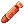
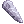
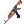
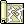

File list
Jump to navigation
Jump to search
This special page shows all uploaded files.
{kind=link}
{kind=link}
| Date | Name | Thumbnail | Size | User | Description | Versions |
|---|---|---|---|---|---|---|
| 01:01, 18 September 2015 | Poisonspore.png (file) | 327 bytes | AloeLeaflet | 1 | ||
| 01:02, 18 September 2015 | Stem.png (file) | 327 bytes | AloeLeaflet | 1 | ||
| 16:29, 17 November 2015 | RG AUTO.png (file) |  |
329 bytes | Halves | Icon for RG Guide. | 1 |
| 14:31, 1 October 2016 | 1703.png (file) |  |
330 bytes | Cyphers | 1 | |
| 16:30, 17 November 2015 | RG REFS.png (file) |  |
331 bytes | Halves | Icon for RG Guide. | 1 |
| 11:23, 15 April 2016 | 2022.png (file) |  |
334 bytes | Mayo | 1 | |
| 10:04, 26 August 2016 | MW .png (file) | 336 bytes | Halves | 1 | ||
| 20:03, 15 December 2015 | Wrappinglace.png (file) | 336 bytes | Adri | 1 | ||
| 20:30, 4 February 2017 | Down Tempo.png (file) | 337 bytes | Wolvero12 | 1 | ||
| 00:42, 22 September 2015 | Orlglov.gif (file) |  |
337 bytes | AloeLeaflet | 1 | |
| 15:37, 17 November 2015 | RG INCR.png (file) | 337 bytes | Halves | Icon for RG guide. | 1 | |
| 11:24, 15 April 2016 | 1228.png (file) | 339 bytes | Mayo | 1 | ||
| 12:42, 30 September 2016 | Bloodyshot.png (file) |  | 339 bytes | Appleproject | 1 | |
| 19:48, 4 February 2017 | Encore.png (file) | 339 bytes | Wolvero12 | 1 | ||
| 23:19, 24 November 2015 | GrayMageHat.gif (file) | 339 bytes | Lai | 1 | ||
| 23:17, 24 November 2015 | BlueMageHat.gif (file) | 342 bytes | Lai | 1 | ||
| 23:18, 24 November 2015 | BrownMageHat.gif (file) | 342 bytes | Lai | 1 | ||
| 20:30, 4 February 2017 | Lullaby.png (file) | 342 bytes | Wolvero12 | 1 | ||
| 06:05, 30 September 2016 | Perfect Tablature.png (file) | 342 bytes | Cyphers | 1 | ||
| 23:23, 24 November 2015 | RedMageHat.gif (file) | 342 bytes | Lai | 1 | ||
| 23:24, 24 November 2015 | YellowMageHat.gif (file) | 343 bytes | Lai | 1 | ||
| 07:30, 30 September 2016 | Arrow Vulcan.png (file) | 344 bytes | Cyphers | 1 | ||
| 19:25, 30 September 2016 | Arrow Crafting.png (file) | 345 bytes | Inberun | 1 | ||
| 01:24, 10 September 2015 | Haedonggum.png (file) | 346 bytes | AloeLeaflet | 1 | ||
| 01:30, 10 September 2015 | Korean Sword.png (file) | 346 bytes | AloeLeaflet | 1 | ||
| 12:31, 30 September 2016 | Silverbullet.png (file) |  | 346 bytes | Appleproject | 1 | |
| 03:55, 6 April 2016 | 21010 ES Slasher Sword.png (file) |  |
347 bytes | Renata | 1 | |
| 14:56, 5 October 2016 | Increase SP Recovery.png (file) | 347 bytes | LethalConcept | 1 | ||
| 20:32, 4 February 2017 | Mental Sensing.png (file) | 347 bytes | Wolvero12 | 1 | ||
| 00:43, 22 September 2015 | Expert ring.gif (file) |  |
348 bytes | AloeLeaflet | 1 | |
| 09:39, 9 September 2016 | Colorscopeicon.png (file) |  | 349 bytes | Appleproject | 1 | |
| 21:37, 25 October 2016 | Sm endure.png (file) | 350 bytes | Tachi | 1 | ||
| 02:00, 18 September 2015 | Droseratentacle.png (file) |  |
351 bytes | AloeLeaflet | 1 | |
| 07:53, 30 September 2016 | Harmonic Lick.png (file) | 351 bytes | Cyphers | 1 | ||
| 09:35, 2 November 2015 | Msm2.gif (file) | 351 bytes | Cosmos | 1 | ||
| 07:06, 30 September 2016 | Music Lessons.png (file) | 352 bytes | Cyphers | 1 | ||
| 00:20, 22 September 2015 | Opecoat.png (file) | 352 bytes | AloeLeaflet | 1 | ||
| 10:37, 30 September 2016 | Slow Grace.png (file) | 352 bytes | Cyphers | 1 | ||
| 08:28, 1 June 2017 | Enriched Elunium.png (file) |  |
353 bytes | Jack | 1 | |
| 16:02, 30 September 2016 | Fortunity - Gangster Scarf.png (file) |  |
353 bytes | Akenoyuki | 1 | |
| 18:45, 20 August 2016 | Battle Theme.png (file) | 354 bytes | Kuno | 1 | ||
| 16:47, 25 October 2016 | RG HOLY.png (file) | 354 bytes | Halves | 1 | ||
| 14:56, 5 October 2016 | Thunderstorm.png (file) |  | 354 bytes | LethalConcept | 1 | |
| 11:23, 15 April 2016 | 1223.png (file) | 357 bytes | Mayo | 1 | ||
| 11:23, 15 April 2016 | 2004.png (file) | 357 bytes | Mayo | 1 | ||
| 10:37, 30 September 2016 | Focus Ballet.png (file) | 357 bytes | Cyphers | 1 | ||
| 00:16, 9 October 2015 | Summon Flora.png (file) | 357 bytes | AloeLeaflet | 1 | ||
| 23:46, 16 September 2015 | Zargon.png (file) | 357 bytes | AloeLeaflet | 1 | ||
| 19:21, 30 September 2016 | Owl's Eye.png (file) |  |
358 bytes | Inberun | 2 | |
| 00:59, 18 September 2015 | Fabric.png (file) | 359 bytes | AloeLeaflet | 1 |
{kind=link}
{kind=link}
{kind=link}
{kind=link}
{kind=link}
{kind=link}
{kind=link}
{kind=link}
{kind=link}
{kind=link}
{kind=link}
{kind=link}
{kind=link}
{kind=link}
{kind=link}